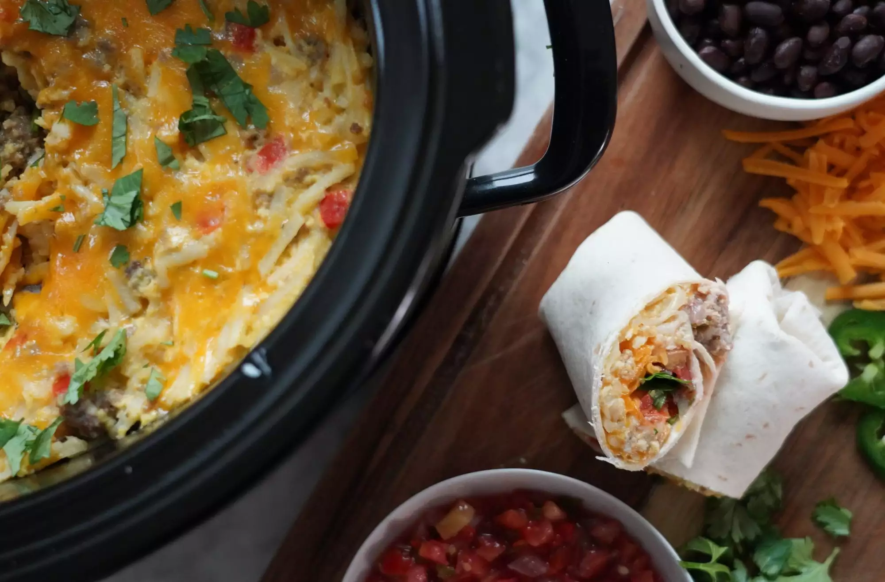

Slow Cooker Breakfast Burrito Bake

Description
Start before you go to bed, and this overnight breakfast burrito bake will be ready when everyone wakes up in the morning! Just set out bowls of shredded cheese, diced avocado, hot sauce, salsa, cilantro, and onion and let your guests customize and roll their own delicious breakfast burritos. Want to stretch this even further and serve it for a fun brunch? Use 6-inch tortillas and serve with mimosas!
Ingredients
- 2 pounds bulk breakfast sausage
- 1 medium onion, finely chopped
- 1 medium bell pepper, finely chopped
- Cooking Spray
- 1 (16 ounce) package frozen shredded hash browns
- 2½ cups shredded Cheddar cheese
- 1 cup milk
- 1 teaspoon kosher salt
- ½ teaspoon ground black pepper
- 12 (10 inch) flour tortillas, warmed
Steps
- Heat a large skillet over medium-high heat. Add sausage and cook, breaking it up with the back of a spoon, until lightly browned and crumbly, about 8 minutes. Add onion and bell pepper; cook until onion is softened, about 5 more minutes. Blot any excess oil in the pan with a paper towel. Continue to cook until sausage is cooked completely, 5 to 7 more minutes. Remove from the heat. (This step can be done 1 day ahead.)
- Spray a slow cooker with cooking spray. Add sausage mixture, hash browns, and Cheddar cheese.
- Whisk eggs, milk, salt, and pepper together in a bowl until well blended. Pour into the slow cooker and stir until evenly combined. Cook on Low 6 to 8 hours or on High for 3 to 4 hours, stirring after the first hour.
- Serve mixture inside warmed tortillas with desired toppings.